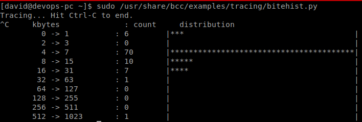

Enhanced Berkley Packet Filter
Agenda
- Metodologías de Análisis de Rendimiento
- Herramientas Clásicas
- eBPF
- bcc
- Ejemplos Prácticos
Metodologías de Análisis de Rendimiento
¿Qué pasos seguir para resolver un problema de rendimiento?
Anti Metodologías
- Culpa a Alguien Más
- Luz de Calle
- Hombre Borracho
- Cambio Aleatorio
- Benchmarking Pasivo
- Luz de Tráfico
Metodologías
- Lista de Comprobación Ad Hoc
- Enunciar el Problema
- RTFM
- Método Científico
- Cíclo OODA (Observar - Orientar - Decidir - Actuar)
- Identificación de la Carga de Trabajo
- Análisis de Perforación
- Proceso de Eliminación
Metodologías
- División de Tiempo
- 5 * ¿Por qué?
- Por Capa
- Herramientas
- USE
- Perfilamiento de la CPU
- Análisis Fuera de CPU
- Perfilamiento del Stack
Metodologías
- TSA
- Benchmarking Activo
- Método R
- Pasos de Evaluación de Rendimiento
- Proceso de Planeación de Capacidad
- Identificación de Rendimiento Jerárquica de Intel
- Mantras de Rendimiento
Profiling vs Tracing
Tracing Tools
Herramientas Clásicas

sar
TipTop
strace
tcpdump
perf
$ perf record -g -F 99 -a -- sleep 60
$ perf script | stackcollapse-perf > out.perf-folded
$ flamegraph out.perf-folded > perf.svg
perf Flamegraphs
Evolución de Flamegraphs
$ /usr/share/bcc/tools/profile -f 5 > profile.data
$ flamegraph profile.data > profile.svg
sysdig
eBPF
eBPF en Netflix
eBPF en Netflix
- ¿Cuantos Ingenieros hay en Netflix? ~1000
- ¿Cuantos Ingenieros usan sin saber eBPF? ~100
- ¿Cuantos ejecutan comandos de eBPF directamente desde la consola? ~12
- ¿Cuantos escriben herramientas con eBPF? ~6
BPF
- 1992
- Filtrar Paquetes
- Inyectado de Userspace a Kernel Space
- Verificado por un "Checker"
"In Kernel Virtual Machine with its own instruction set."
- tcpdump -d: assembly instruction set for BPF
eBPF
- Mejora a la Máquina Virtual
- 2013: Alexei Starovoitov
"What if we could Programatically Redirect Packets"
- Terminó siendo una máquina virtual aislada en el kernel donde se pueden ejecutar programas que se crearon desde el espacio de usuario
eBPF es Usado por
- tcpdump
- cls_bpf: classifier for traffic shaping (QoS)
- seccomp-bpf: syscalls filter to sandbox applications
- xt_bpf: iptables module
Evolución de eBPF
Usos de eBPF
- Tracing
- Software Defined Networking
- DDoS Mitigation (Cloudflare)
- Intrusion Detection
- Container Security
eBPF internamente
Retransmisiones TCP
Código BPF
Código BPF

BPF Compiler Collection
bcc
bcc Tracing Tools
### Block I/O size histogram
### bcc/examples/tracing/bitehist.py
from bcc import BPF
from time import sleep
# load BPF program
b = BPF(
text="""
...
""")
# header
print("Tracing... Hit Ctrl-C to end.")
# trace until Ctrl-C
try:
sleep(99999999)
except KeyboardInterrupt:
print
# output
b["dist"].print_log2_hist("kbytes")
#include <uapi/linux/ptrace.h>
#include <linux/blkdev.h>
BPF_HISTOGRAM(dist);
int kprobe__blk_account_io_completion(
struct pt_regs *ctx,
struct request *req
)
{
dist.increment(
bpf_log2l(
req->__data_len / 1024
)
);
return 0;
}
/bcc/examples/tracing/bitehist.py
Ejemplos Prácticos
Ejemplo 1